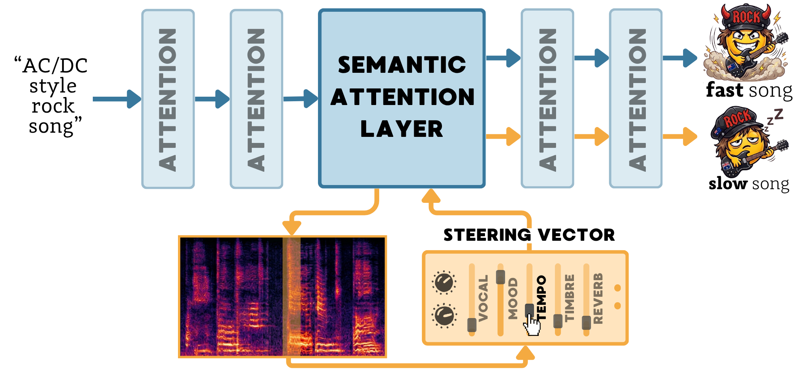

TADA! Tuning Audio Diffusion Models through Activation Steering

Abstract
Audio diffusion models can synthesize high-fidelity music from text, yet achieving fine-grained control over specific musical attributes remains challenging, as their internal mechanisms for representing high-level concepts are poorly understood. In this work, we use activation patching to demonstrate that recent audio diffusion architectures exhibit a semantic bottleneck, where a small, shared subset of consecutive attention layers controls distinct musical concepts, such as the presence of specific instruments, vocals, or genres. Building on this, we systematically evaluate a broad spectrum of steering paradigms, comparing activation steering against prompt-level, score-space, and weight-space interventions, analyzing the interaction between the steering mechanism and the intervention site. Our new benchmark, supported by an extensive user study, demonstrates that localized activation steering establishes a new state-of-the-art in audio concept modulation.
Steering Audio Examples
Pick an example, then drag any method's slider to steer the audio in real time. The first row is a baseline picker — swap in different methods to compare against the localized variants.